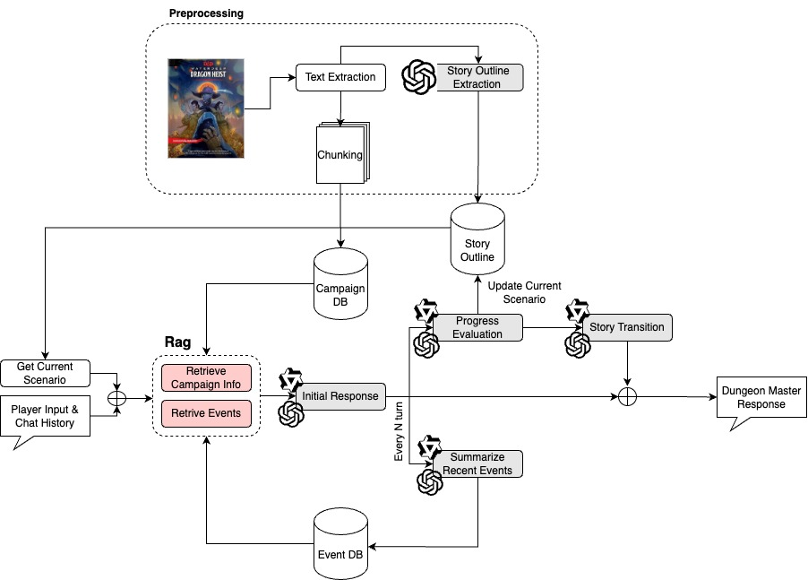

VoloLLM is a Dungeon and Dragons dungeon
master chatbot. It is designed to ingest Dungeons and Dragons adventure modules as guide a single player through
the adventure.
Introduction
Dungeons & Dragons (D&D) is an open-ended
tabletop role-playing game. Players take the role
of a single crafted character, while the Dungeon
Master (DM) creates a story, following conventions
from a campaign book, and will lead the players
through it. DM work can get extremely tedious
and taxing as they have to deal with complex intertwined storylines, setting and character consistency,
and crafting engaging gameplay. While enjoyable,
many players can find it challenging to schedule
player sessions over multiple weeks, coordinates
groups of 4 or more people, and for DMs to prepare
thoroughly for each session.
Our team aims to develop an application that
will take the role of a DM and will guide players
through an predefined story, adventure modules,
and be able to respond to players’ input and actions
while building a cohesive story. Our hopes is to
address this issue of potential players not being
able to find others who have the time or energy to
join them on a session.
Background
There has been previous research done on the types of models that have been created for similar purposes.
Many focused on one component, but our findings have shown that a mixture of the following can be beneficial.
Fine-tuned LLMs
Fine-tuning has been shown to improve story-
telling abilities of an LLM, enhancing the stylistic
capabilities and showing writing prowess when
given extremely specific prompts and requirements
(Gite et al., 2024). Additionally, when utilizing
parameter-efficient techniques such as QLoRA, the
model does not require a high volume of stories to
feed into its training process.
Although the quality of the generated stories
increase, an ethical issue arises of how to deal with
plagiarism and stealing of authors’ works. There
have been studies highlighting cases where models
have written eerily similar stories to preexisting
ones, and unless safeguards are implemented, there
is a high risk of real life stories being stolen and
published as fully original (Xie et al., 2023).
Another downside to fine-tuning is that this technique has not been utilized to improve storytelling
consistency and memory.
Retrieval-Augmented Generation (RAG)
RAG techniques retrieve relevant story elements
and maintain contextual relevance depending on
the input by the player. Other researchers have
found that by utilizing RAG can enhance plotline
consistency and have the ability to incoroporate
’common-sense’ constraints, meaning the LLM has
a rationale for every line given (Wen et al., 2023).
In the studies found, RAG based LLMs have stories
that have been evaluated by human annotators to
be the most creative and complex in comparison to
other prompting techniques. It also mitigates the
problem of plagiarism as it has been found that the generated stories have a zero N-gram overlap with
original text.
While effective for static or partially structured
narratives, these methods struggle with the dynamic, player-driven nature of D&D campaigns.
Motivation
Our project is the provide guided narrative experience for tabletop role player gamers. There are
many new and classic adventure modules that many gamers would love to player.
Target Audience
D&D Players and DMs
Players who wish to engage in immersive D&D campaigns without requiring a human DM, or DMs who would like to
use
this LLM as an aid to their own campaign.
Game Developers
Any game developers who
would like to potentially use this as a baseline to
train narrators within their own game could potentially use this in their work.
Outside Impacts
Enhanced Accessibility
Removes the dependency on human DMs, making tabletop RPGs more
accessible to new players and underrepresented communities.
Scalable Narratives
Allows larger-scale campaigns and group interactions to occur without
extra resources needed.
Related Fields
Offers foundation for other storyline-driven projects to use AI as a
supporting narrator, such as game developers and authors.
Approach
For our project we created an end-to-end DM system called VoloLLM. This system is able to ingest
a Dugneons and Dragons PDF adventure module
and create a database and populate the contents of
a progression system. It after responding with a
hard coded introduction to the campaign players
type their response the the first prompt and the system generates a reply that furthers the story.
More details about each of the implementations are provided below.

Campaign Preprocessing
Although we could create a system that is creates narratives entirely improvisationally, there is a
wealth of existing official and unofficial prewritten
adventures that players may want to play. Because
of this we need of a way for out system to ingest
these stories and automatically process Dungeons
and Dragon adventure module.
Story Progress Tracking
After a certain window of responses has passed (currently set to 5), the LLM evaluates whether the current
scenario has been resolved or not. If the criteria are satisfied, the system transitions players to the next
scenario. This progress tracking mechanism minimizes the risk of narrative stagnation or divergence from the
campaign's core storyline. This feature is useful to avoid divergence from the campaign, allowing players to
encounter all vital storylines.
Action Summarization & Database
In a Dungeons and Dragons campaign, the impact of player choices on the story is essential for immersion and
enjoyment. To
an Action Database tracks player decisions using text summarization of a rolling chat history. Every three
turns (each
consisting of one human message and one AI response), the system summarizes the most recent five-turn window
to extract
key events. These events are stored in a Hugging Face in-memory vector store for future retrieval. This
approach
balances coherence and context, with the five-turn window providing sufficient detail for smaller models
while avoiding
repetition or loss of flow. Overlapping summaries ensure continuity and accurate representation of player
actions.
Retrieval Augmented Generation
VoloLLM utilizes Retrieval-Augmented Generation (RAG) to improve DM
responses by integrating contextual information from the campaign database (holds info on world and
setting), and the event database (actions and scenarios that have happened). Using
Hugging Face's InMemoryVectorStore and BERT (bert-base-uncased) for vector embeddings, the RAG provides
context and relevant information into every prompt.
This allows for more contextual clues and information on generated responses, aiding with story consistency.
Anticipated Challenges
Our team anticipated that there will be issues with stylization and memory. Throughout our research, we saw little
documentation on utilizing multiple methods to train a model to be specialized in this type of storytelling.
Especially when trying to handle a game as open-ended as D&D, there are limitless options to be taken and the model
has to keep track to ensure that each event is accounted for, the response will make thematic sense, and has to be in
the right tone. There's a lot of factors at hand and finding a way to manage them all was the point of this project.
Challenges Encountered
There were a number of challenges that we encountered during the project. Firstly, we intended to fine-tune the model to improve the style
and format of the responses. We initially planned to do this using transcripts from a a Dungeons and Dragons podcast, but
we found the model seem to overfit to the dataset and would often respond with mannerisms of the podcast's DM, and
include characters from the responses. We explored using synthetic data generated using ChatGPT, however, because of the
large response sizes needed to emulated the chat history and other contextual information, the cost was prohibitively
expensive.
We finally found that improved prompt construction using techniques learned through the course of the semester instead
greatly improve response quality and consistency. Additionally, for the local models techniques such as automatic chain
of thought prompting and few-shot prompting improve greatly improved the detail of response and output format.
The most persistent issue experience throughout the project was generation of consistent output formats. Because so many
systems rely on LLMs to generate story progress status of event summaries, the system is vulnerable to issues of prompt
structure leaking into the generate response when it is parse from the full LLM response. For instance if the "CHAT
HISTORY" heading string leaks through the LLM response, then it is can end up in chat history or action history. This
can then lead to the string appearing event more frequently and leading to all further responses to be ill-formatted and
difficult for a human to read.
Response formatting issues are most prevalent on local models, but also occur with ChatGPT models with less frequency.
The addition of output formatting and parsing with LangChain, the issue still persisted.
Results
Player Satisfaction Survey Results
| Category |
Average Score |
| Narratives |
5.37 |
| Player Engrossment |
4.27 |
| Enjoyment |
5.57 |
| Creative Freedom |
5.63 |
| Personal Gratification |
4.8 |
| Social Connectivity |
5.37 |
| Textual Aesthetics |
5.17 |
In total 15 players, including the 3 researchers, played VoloLLM chatbot with the OpenAI LLM backend. From player
responses, all categories of player satisfaction rated neutral or above. The two highest rated categories of
satisfaction were Creative Freedom and Enjoyment. Players reported surprise at how capable the chatbot
was at addressing their character choices. They felt that they are free to choose their own path through the story and
the chatbot would smoothly accommodated almost any choice while incorporating choice details.
The two lowest categories of satisfaction are Player Engrossment and Personal Gratification. Some of the
most cited complaints by players was the lack of challenge in the story. Player sited that the bot was too compliant
to the point of taking away for story enjoyment. During one anecdote a user was able to use sci-fi weapons to defeat
their enemies, or in an other instance the user stopped performing the quest and instead went to go get burgers. The
lack of challenge and constraint makes player feel unchallenged and unsatisfied.
Additionally, the chatbot responds with relatively large blocks of text reaching 256 characters in length. Users that
do not report enjoying reading, reported that the text-based nature of the game made the experience less enjoyable.
This may be why in the table above, we see the greatest degree of standard deviation in both
questions regarding Player Engrossment and Question 6 which asks about player boredom.
Model Satisfaction Survey Results
| Category |
Q |
GPT 4o |
Qwen 14B |
Qwen 7B |
| Narrative |
1 |
6.33 |
5.33 |
5 |
| 2 |
5.67 |
5.33 |
5.67 |
| Player Engrossment |
3 |
5 |
3 |
3 |
| 4 |
4.3 |
4 |
2.33 |
| Enjoyment |
5 |
5.33 |
5 |
5 |
| 6* |
4.33 |
4 |
4 |
| Creative Freedom |
7 |
5 |
6.33 |
6 |
| 8 |
6 |
6.3 |
6 |
| Personal Gratification |
9 |
5 |
4 |
4.33 |
| Social Connectivity |
10 |
5.67 |
4.33 |
5 |
| 11 |
6.33 |
3.67 |
3.33 |
| Textual Aesthetics |
12 |
6 |
3 |
2.33 |
| 13 |
6.33 |
3.67 |
3.33 |
When comparing the quality of play between the locally run models, Qwen 2.5 7B \& 14B, and the OpenAI the clear winner
is OpenAI. It is the only model that performed above neutral for all categories of satisfaction, as seen above, and satisfaction questions, except for Question 6 where it was reported as being
more. The one area where the Qwen models are reported beating ChatGPT 4o in our evaluation is CreativeFreedom.
From our experience, the model tends to more directly address actions the player takes, and with shorter responses.
| Event Number |
Cosine Similarity Score |
| 1 |
0.7085 |
| 2 |
0.7827 |
| 3 |
0.8199 |
| 4 |
0.8671 |
| 5 |
0.7684 |
| 6 |
0.6830 |
| 7 |
0.7094 |
| 8 |
0.7696 |
| 9 |
0.8385 |
| 10 |
0.5850 |
| 11 |
0.7141 |
| 12 |
0.7140 |
| 13 |
0.6932 |
| 14 |
0.7117 |
| 15 |
0.5767 |
| 16 |
0.8566 |
| 17 |
0.7776 |
| 18 |
0.7686 |
Cosine Similarity Scores between the generated events and the corresponding passage in the module "Deepwater -
Dragon Heist" using 'all-mpnet-base-v2' sentence transformer.
From our results, our team found that all of the event descriptions ranged from a moderate to high score (0.57
to
0.86), indicating high similarity to the original campaign module. This is what our team was aiming for as the
closer
the generated timeline events are to the original text, the higher likelihood that the generated responses using
these
event contexts will be accurate as well.
Conclusion
Replicability
Our research result are focused largely on the psychometric analysis of 15 players that are playing
VoloLLM for brief periods of time, 15 to 60 minutes. Players were selected from among family and
friends of the authors of this report. Given the small
sample size and flawed methodology for gathering
impartial participants it is likely that future research
based on this work may find significantly different
results. This is all to say that we do not claim
that our results are statistically significant or robust.
However, we defend our method of sampling citing
the scope of the course project and financial cost
contacting significant number of participants from
relevant communities, such as the tabletop gaming
community, and API costs associated with running
these trials.
If someone did want to run trials to
replicate our findings, all source code is
currently phallically available on Github:
https://github.com/padpy/VoloLLM. The only
additional materials need to run the code is an
OpenAI API key, for access to the paid API. A copy of the survey is found in our given report.
Future Work
Stylization
There is room for improvement in the stylization of the LLM’s responses, as they may read off as bland and
boring, which can hurt the users’ experience.
Survey More Players
Using our modified Guess-18 questionnaire, future work should interview many more players to identify areas
of weakness within the gameplay loop.
Optimizing System Performance
Research should be done to evaluate the efficacy of RAG-based systems and whether the database should be
stored in one structure vs. another.
Introducing New Campaigns
More campaigns should be introduced and run through by the model to ensure our team has not just been
focusing on optimizing for a single campaign.
Ethical Concerns
The main concern around our application is the generation of sensitive or immoral content. We do not implement any
user safety mechanisms that protect users from inappropriate generated content, and solely rely on safety trained in
the model or mechanisms implented through OpenAIs API. Our application is sensitive to injection techniques and
jailbreaking. One common method for jailbreaking LLMs is to ask them to speak from another entity, bypassing their
built-in safety rules. Our application is already asking the AI model to roleplay be default, making it more prone to
produce otherwise prohibited contents, even through OpenAI's API.
In play testing there were several incidents that ovvured that typically would not be allowed through through the
OpenAI API. Firstly, we were able to generate suggestive content during romance attempts between player characters and
non-player characters. Secondly, we were about to prompt the LLM is such a way that is described graphic acts of
violence towards humans and animals. This typically is not allowed by OpenAI, but in the course a play testing it
freely generate this content. We can already see that, the model is prone to bypassing safety restrictions placed on
the model by OpenAI.
Currently, we as the developers have access to the chat logs and data of all chats sent through VoloLLM for
purposeful analysis. This may violate the privacy concerns of some users, especially when expecting a private session,
as they want their chats to remain anonymous and inaccessible to other individuals. While we explicitly made this fact
clear in this iteration, through a user-informed consent protocol, future interactions should also keep this ethical
concern in mind and take further precautions in accessing and using this data.